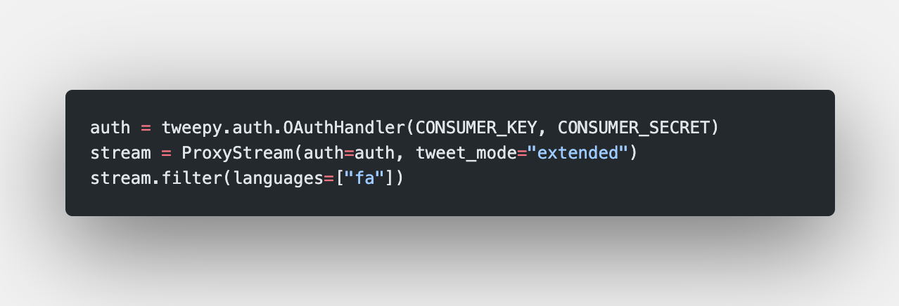

مطالعه و پیادهسازی سامانهای جهت
جمعآوری و خوشهبندی دادههای متنی و کاربران شبکههای اجتماعی
شهریور ۱۳۹۹
ارائه دهنده
علیرضا حیدری
استاد راهنما
دکتر سعیده ممتازی
استاد داور
دکتر احسان ناظرفرد
دانشگاه صنعتی امیرکبیر | دانشکده مهندسی کامپیوتر و فناوری اطلاعات
جمعآوری و خوشهبندی دادههای شبکه اجتماعی | علیرضا حیدری
دانشکده مهندسی کامپیوتر
دانشگاه صنعتی امیرکبیر

در
این
ارائه
- تعریف سیستم
- طرح مسئله
- سیستم پیشنهادی
- پیادهسازی
- ارزیابی
- جمعبندی
جمعآوری و خوشهبندی دادههای شبکه اجتماعی | علیرضا حیدری
دانشکده مهندسی کامپیوتر
دانشگاه صنعتی امیرکبیر
بخش اول
مقدمه
جمعآوری اطلاعات
به چه اطلاعاتی نیاز داریم
خوشهبندی
چه اطلاعاتی را خوشهبندی کنیم
رابط کاربری
دسترسی به اطلاعات سامانه به چه شکلی صورت بگیرد
جمعآوری و خوشهبندی دادههای شبکه اجتماعی | علیرضا حیدری
دانشکده مهندسی کامپیوتر
دانشگاه صنعتی امیرکبیر
جمعآوری اطلاعات
- جمعآوری دادههای فارسی زبان
- جمعآوری اطلاعات در موضوعات مشخص
- دریافت اطلاعات به صورت جریانی منظم
- جمعآوری لیست کاربران و روابط بین کاربران
جمعآوری و خوشهبندی دادههای شبکه اجتماعی | علیرضا حیدری
دانشکده مهندسی کامپیوتر
دانشگاه صنعتی امیرکبیر
خوشهبندی اطلاعات
- خوشهبندی محتوایی پستها
- خوشهبندی کاربران
- سرعت و دقت مناسب در خوشهبندی
جمعآوری و خوشهبندی دادههای شبکه اجتماعی | علیرضا حیدری
دانشکده مهندسی کامپیوتر
دانشگاه صنعتی امیرکبیر
رابط کاربری
- نمایش اطلاعات جمعآوری شده
- امکان شخصیسازی سیستم
- مشاهده دادههای استخراج شده
- دسترسی به اطلاعات کلی سیستم
جمعآوری و خوشهبندی دادههای شبکه اجتماعی | علیرضا حیدری
دانشکده مهندسی کامپیوتر
دانشگاه صنعتی امیرکبیر
بخش دوم
طرح مسئله
جمعآوری اطلاعات
به چه اطلاعاتی نیاز داریم
خوشهبندی
چه اطلاعاتی را خوشهبندی کنیم
رابط کاربری
دسترسی به اطلاعات سامانه به چه شکلی صورت بگیرد
جمعآوری و خوشهبندی دادههای شبکه اجتماعی | علیرضا حیدری
دانشکده مهندسی کامپیوتر
دانشگاه صنعتی امیرکبیر
طرح مسئله
پیادهسازی روشهای بهینه جهت جمعآوری پستهای شبکه اجتماعی متناسب با هر شبکه اجتماعی
ارائه روشی بهینه جهت خوشهبندی اطلاعات از طریق محتوای پستها و گراف رابطه کاربران
جمعآوری و خوشهبندی دادههای شبکه اجتماعی | علیرضا حیدری
دانشکده مهندسی کامپیوتر
دانشگاه صنعتی امیرکبیر
طرح مسئله
قابلیت توسعه جهت پشتیبانی شبکههای اجتماعی گوناگون
سرعت مناسب سیستم و تحلیل داده و قابلیت گسترش تحلیلها
جمعآوری و خوشهبندی دادههای شبکه اجتماعی | علیرضا حیدری
دانشکده مهندسی کامپیوتر
دانشگاه صنعتی امیرکبیر
بخش سوم
سیستم پیشنهادی
تعریف مفاهیم
جمعآوری پستها به صورت استریم و کوئری و استفاده از پستهای ترند
خوشهبندی افزایشی
الگوریتم Mini Batch Kmeans
رابط کاربری React
داشبورد مدیریت پایگاه داده و مشاهده اطلاعات توسط کاربران عادی سامانه
جمعآوری و خوشهبندی دادههای شبکه اجتماعی | علیرضا حیدری
دانشکده مهندسی کامپیوتر
دانشگاه صنعتی امیرکبیر
تعریف مفاهیم
کوئری
مجموعهای از عبارات، جهت جمعآوری پستهای حاوی این عبارات
استریم
جمعآوری لحظهای پستهای در حال انتشار در شبکههای اجتماعی
جمعآوری و خوشهبندی دادههای شبکه اجتماعی | علیرضا حیدری
دانشکده مهندسی کامپیوتر
دانشگاه صنعتی امیرکبیر
تحلیل اطلاعات دادههای تفکیک شده
کوئری
پستهای حاصل از کوئریها
ترند
استخراج عبارات پرتکرار
تعریف مفاهیم
جمعآوری و خوشهبندی دادههای شبکه اجتماعی | علیرضا حیدری
دانشکده مهندسی کامپیوتر
دانشگاه صنعتی امیرکبیر
خوشهبندی دادهها
افراز اشیاء گوناگون به گروههای مجزا به صورتی که اعضای هر گروه مشابه اند
خوشهبندی تفکیکی
- عملیات خوشهبندی براساس n مشاهده و k گروه عملیات
- تعداد خوشهها یا گروهها از قبل مشخص است
- هر شئ فقط و فقط به یک گروه تعلق دارد
جمعآوری و خوشهبندی دادههای شبکه اجتماعی | علیرضا حیدری
دانشکده مهندسی کامپیوتر
دانشگاه صنعتی امیرکبیر
فضاهای خوشهبندی
خوشهبندی فضای برداری
خوشهبندی اطلاعات محتوایی و پستهای شبکه اجتماعی
خوشهبندی فضای گراف
خوشهبندی کاربران سامانه
جمعآوری و خوشهبندی دادههای شبکه اجتماعی | علیرضا حیدری
دانشکده مهندسی کامپیوتر
دانشگاه صنعتی امیرکبیر
خوشهبندی
فضای
برداری
خوشهبندی kmeans
مشاهدات:
خوشهها:
تابع هدف:
جمعآوری و خوشهبندی دادههای شبکه اجتماعی | علیرضا حیدری
دانشکده مهندسی کامپیوتر
دانشگاه صنعتی امیرکبیر
خوشهبندی
فضای
برداری
الگوریتم kmeans++
انتخاب مراکز الگوریتم kmeans به صورت تصادفی اما با درنظرگرفتن مقادیر دادهها
1.اولین مرکز به صورت تصادفی انتخاب میشود
2.فاصله d(x) به عنوان مقدار فاصله x از آخرین مرکز انتخاب شده محاسبه میشود
3.مرکز جدید را دادهای کهه بیشترین مقدار d(x) را داراست انتخاب میکنیم
4.مراحل ۲ و ۳ تا انتخاب کامل مراکز تکرار میشود
جمعآوری و خوشهبندی دادههای شبکه اجتماعی | علیرضا حیدری
دانشکده مهندسی کامپیوتر
دانشگاه صنعتی امیرکبیر
خوشهبندی
فضای
برداری
الگوریتم Mini Batch Kmeans
الگوریتم خوشهبندی افزایشی به صورتی که دادههای جدید را گرفته و به خوشههای قبلی اضافه میکند.
1.b نمونه از داده ورودي به صورت تصادفی انتخاب میشوند تا یک Mini Batch را تشکیل
دهند. این موارد به نزدیکترین مراکز تخصیص داده میشوند.
2.مراکز به روزرسانی میشوند. برخلاف خوشهبندي استاندارد، این کار به ازاي هر نمونه انجام میشود. به ازاي هر نمونه در Mini Batch مرکز اختصاصیافته با درنظرگرفتن جریان نمونه فعلی و نمونههاي قبلی به روزرسانی میشود.
جمعآوری و خوشهبندی دادههای شبکه اجتماعی | علیرضا حیدری
دانشکده مهندسی کامپیوتر
دانشگاه صنعتی امیرکبیر
تشخیص انجمنها
انجمن: گروههایی از نودهای شبکه با ارتباط تناتنگ و ارتباط نسبتا کم با نودهای بیرون شبکه
الگوریتمهای مورداستفاده:
- Minimum-cut method
- Modularity Maximization
- Statistical Inference
- Clique-based Methods
- ...
خوشهبندی
فضای
گراف
جمعآوری و خوشهبندی دادههای شبکه اجتماعی | علیرضا حیدری
دانشکده مهندسی کامپیوتر
دانشگاه صنعتی امیرکبیر
Fluid Communities Detection
تخصیص نودها به k دسته خوشه
گراف ورودی:
دستهها:
تعریف:
خوشهبندی
فضای
گراف
جمعآوری و خوشهبندی دادههای شبکه اجتماعی | علیرضا حیدری
دانشکده مهندسی کامپیوتر
دانشگاه صنعتی امیرکبیر
Fluid Communities Detection
مراحل الگوریتم:
1.اختصاص نودها به خوشهها به صورت تصادفی به صورتی که هر خوشه حداقل یک نود را شامل شود.
2.فرمول ۴-۱ و ۴-۲ را برای تمامی نوها محاسبه میکنیم.
3.تا زمانی که دومرحله پشتسرهم تغییری حاصل نشود مرحله ۲ تکرار میشود.

خوشهبندی
فضای
گراف
جمعآوری و خوشهبندی دادههای شبکه اجتماعی | علیرضا حیدری
دانشکده مهندسی کامپیوتر
دانشگاه صنعتی امیرکبیر
وزندهی به عبارات متنها - TF-IDF
به ازای هر کلمه مقدار فرمول روبرو محاسبه میشود:
- tf: تعداد تکرار کلمه بر تعداد کل کلمات محتوا
- df: تعداد محتواهای شامل کلمه
- idf: لگاریتمم تقسیم تعداد کل محتوا بر محتواهای شامل کلمه
جمعآوری و خوشهبندی دادههای شبکه اجتماعی | علیرضا حیدری
دانشکده مهندسی کامپیوتر
دانشگاه صنعتی امیرکبیر
بخش چهارم
پیادهسازی
ابزارها
از چه ابزارهایی جهت پیادهسازی استفاده کردیم
چالشها
چالشهای پیادهسازی برای شبکههای اجتماعی مختلف به چه صورت است
نمایش نتایج
نمایی از نتایج و رابط کاربری
جمعآوری و خوشهبندی دادههای شبکه اجتماعی | علیرضا حیدری
دانشکده مهندسی کامپیوتر
دانشگاه صنعتی امیرکبیر
ابزارها
- زبان پایتون
- networkx کتابخانه
- sklearn کتابخانه
- کتابخانه tweepy
- کتابخانه instagram_web_api
- ابزار مدیریت تسک Celery
جمعآوری و خوشهبندی دادههای شبکه اجتماعی | علیرضا حیدری
دانشکده مهندسی کامپیوتر
دانشگاه صنعتی امیرکبیر
استفاده از فریمورک Django
- فریمورک زبان پایتون
- ساختاری با چارچوب منظم
- مدیریت پایگاه داده - orm
- برقراری ارتباطات http

جمعآوری و خوشهبندی دادههای شبکه اجتماعی | علیرضا حیدری
دانشکده مهندسی کامپیوتر
دانشگاه صنعتی امیرکبیر
پایگاه داده Postgresql
- پایگاه داده رابطهای
- توابع built-in پایگاه داده
- جامعه توسعهدهنده گسترده
- هماهنگی با فریمورک django
جمعآوری و خوشهبندی دادههای شبکه اجتماعی | علیرضا حیدری
دانشکده مهندسی کامپیوتر
دانشگاه صنعتی امیرکبیر
جمعآوری
دادههای
توییتر
جمعآوری اطلاعات جریانی توییتر با فیلترهای مشخص

- نیاز به سرور پراکسی
- نیازمند مدیریت rate limit
جمعآوری و خوشهبندی دادههای شبکه اجتماعی | علیرضا حیدری
دانشکده مهندسی کامپیوتر
دانشگاه صنعتی امیرکبیر
جمعآوری اطلاعات جریانی اینستاگرام با کمک کاربران داخل سامانه
- نیازمند ماژول تشخیص زبان(آزمایشگاه دانشکده)
- نیازمند مدیریت کاربران
- نیازمند مدیریت rate limit
جمعآوری
دادههای
اینستاگرام
جمعآوری و خوشهبندی دادههای شبکه اجتماعی | علیرضا حیدری
دانشکده مهندسی کامپیوتر
دانشگاه صنعتی امیرکبیر
بخش پنجم
ارزیابی
مقایسه خوشهبندی افزایشی و معمولی
سرعت و دقت خوشهبندیها به چه صورت تغییر میکند
جمعآوری و خوشهبندی دادههای شبکه اجتماعی | علیرضا حیدری
دانشکده مهندسی کامپیوتر
دانشگاه صنعتی امیرکبیر
هشتگ پراستفاده اخیر: #اعدام_نکنید
۴ هشتگ پراستفاده همراه با این هشتگ جهت ارزیابی همراه با متد v measure استفاده شدند
جمعآوری و خوشهبندی دادههای شبکه اجتماعی | علیرضا حیدری
دانشکده مهندسی کامپیوتر
دانشگاه صنعتی امیرکبیر
بخش ششم
جمعبندی
جمعآوری اطلاعات
خوشهبندی
کارهای آینده
جمعآوری و خوشهبندی دادههای شبکه اجتماعی | علیرضا حیدری
دانشکده مهندسی کامپیوتر
دانشگاه صنعتی امیرکبیر
جمعآوری پستها
- استفاده ار کتابخانهها جهت برقراری ارتباط
- جمعآوری به کمک کاربران داخل سامانه
- مدیریت rate limit
- هر شبکه اجتماعی متناسب با روش خود
جمعآوری و خوشهبندی دادههای شبکه اجتماعی | علیرضا حیدری
دانشکده مهندسی کامپیوتر
دانشگاه صنعتی امیرکبیر
خوشهبندی
- خوشهبندی Mini Batch سرعت با نسبت بسیار بالاتر
- خوشهبندی Mini Batch دقت با نسبت اندکی کمتر
- استفاده از Fluid Communities Detection جهت خوشهبندی کاربران
جمعآوری و خوشهبندی دادههای شبکه اجتماعی | علیرضا حیدری
دانشکده مهندسی کامپیوتر
دانشگاه صنعتی امیرکبیر
منابع:
- [1] Ferran Pares ́, Dario Garcia-Gasulla, Armand Vilalta Jonatan Moreno Eduard Ayguade Jes ́ us Labarta Ulises Cort ́ es and Suzumura, Toyotaro. Fluid com- munities: A competitive, scalable and diverse community detection algorithm. Springer, 2017.
- [2] Forgy, Edward W. Cluster analysis of multivariate data: efficiency versus inter- pretability of classifications. Biometrics, 1965.
- [3] Lloyd, Stuart P. Least squares quantization in pcm. IEEE transactions on in- formation theory, 1982.
- [4] Sculley, D. Web-scalek-meansclustering. Proceedings of the19thinternational conference on World wide web, 2010.56
جمعآوری و خوشهبندی دادههای شبکه اجتماعی | علیرضا حیدری
دانشکده مهندسی کامپیوتر
دانشگاه صنعتی امیرکبیر
باتشکر:
- دانشجوی دکتری، علیاصفر تقیزاده
- دانشجوی ارشد، همایون حیدرزاده
- دکتر ممتازی
جمعآوری و خوشهبندی دادههای شبکه اجتماعی | علیرضا حیدری
دانشکده مهندسی کامپیوتر
دانشگاه صنعتی امیرکبیر
باتشکر از توجه شما